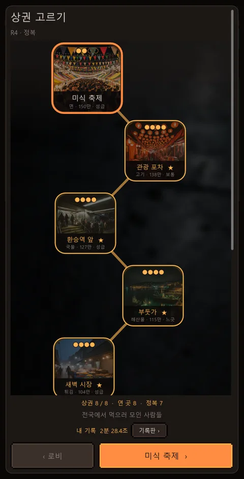
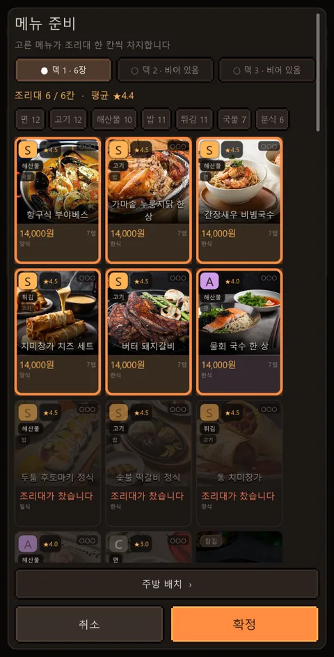
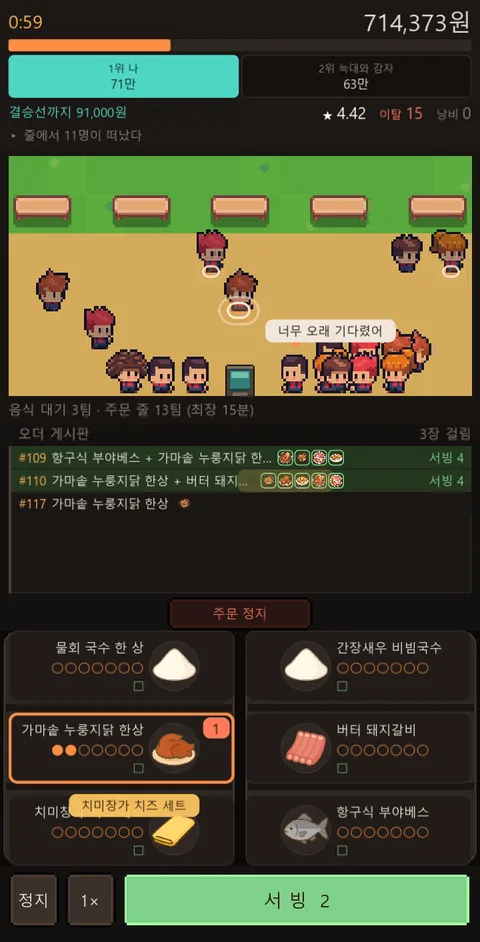
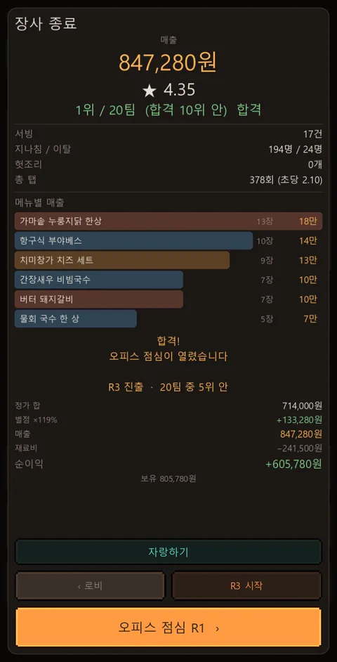
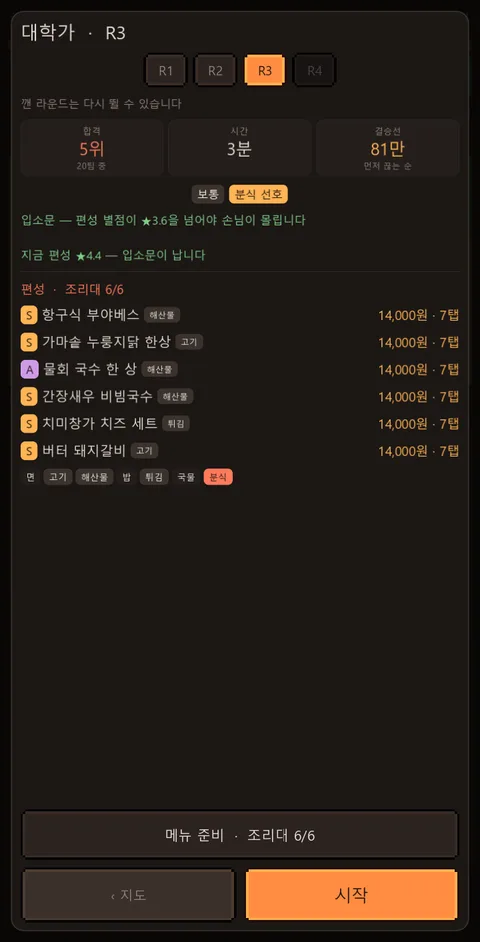
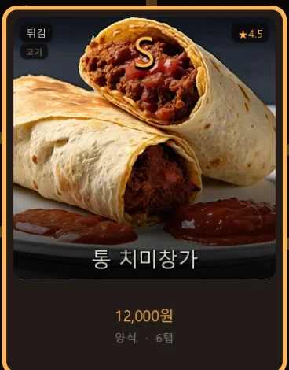
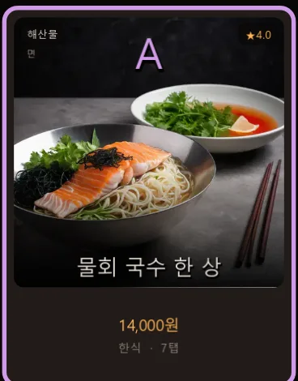
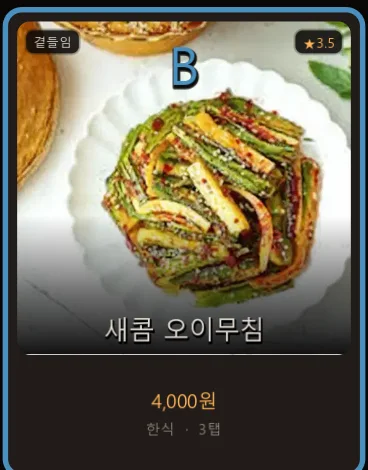
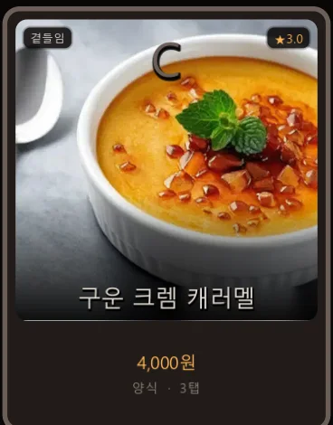

거리 하나에 노점이 스무 곳 선다. 목표 매출을 먼저 찍는 순서대로 순위가 정해진다. 한 판은 길어야 3분, 보통은 그 전에 끝난다.
Google Play 에서 받기 무료 · 광고 있음15초. 전부 실제 플레이 화면이다.
방송을 보고 비슷한 걸 폰에서 해보고 싶어 찾아오는 분이 많아 적어 둡니다.
방송은 스무 팀이 길에 나가서 매출 하나로 순위를 가립니다. 이 게임도 그렇습니다. 다만 한 판이 3분이고, 요리는 조리대를 손가락으로 두드려서 합니다.
| 방송에서 본 것 | 이 게임 |
|---|---|
| 스무 팀이 한 거리에서 장사한다 | 라이벌 노점 19곳 + 나. 스무 팀 그대로다 |
| 순위는 매출로만 가린다 | 목표 매출을 먼저 찍는 순서로 순위가 확정된다 |
| 장소가 바뀌면 손님이 바뀐다 | 상권 여덟 곳. 찾는 음식과 씀씀이가 다 다르다 |
| 하루 종일 영업한다 | 한 판 3분. 출근길에 한 판 한다 |
| 진짜 요리를 한다 | 조리대를 두드린다. 메뉴마다 필요한 탭수가 다르다 |
공식 게임이 아닙니다. tvN 「스트릿 레스토랑 파이터」(스레파)와 아무 관계가 없고, 방송사·제작진·출연자와도 무관합니다. 1인이 만든 개인 게임입니다. 방송 이름을 여기 적은 건 그 방송을 보고 찾아오신 분께 무엇이 같고 무엇이 다른지 먼저 말씀드리려는 것뿐입니다.
고르고, 짜고, 3분 두드리고, 정산합니다.

상권마다 찾는 음식이 다릅니다. 부둣가는 해산물, 환승역 앞은 빨리 나오는 국물, 새벽 시장은 튀김입니다. 목표 매출도 상권마다 다릅니다 — 첫 상권이 69만원이고, 한 곳 넘어갈 때마다 11만 5천원씩 올라 마지막 상권은 149만 5천원입니다.

가진 카드 중 여섯 장만 걸 수 있습니다. 손님 취향은 면·고기·해산물·밥·튀김·국물·분식 일곱 가지라 여섯 칸으로는 전부를 못 덮습니다. 무엇을 버릴지가 판 전의 유일한 결정입니다.
비싼 카드만 걸면 객단가는 오르지만 손이 모자랍니다. 7탭짜리 메뉴는 완성까지 일곱 번을 두드려야 하고, 서빙에 한 번을 더 씁니다.

지나가던 사람 머리 위에 하얀 파동이 뜨면 관심이 생긴 겁니다. 그때 탭하면 열에 아홉이 손님이 됩니다. 파동 없는 사람을 아무리 눌러도 거의 안 붙습니다. 파동은 1~2초면 꺼지고 거리에 동시에 세 명까지만 뜹니다.
주문이 들어오면 조리대를 두드려 만들고 서빙을 누릅니다. 20초를 넘기면 손님이 취소하고 가게 별점이 깎입니다. 손이 벅차면 주문 정지로 새 주문을 잠시 막을 수 있습니다.

몇 등인지, 무엇이 얼마나 팔렸는지, 재료비를 빼고 얼마가 남았는지가 나옵니다. 남은 돈이 다음 카드를 뽑는 밑천입니다.
상권마다 라운드가 네 판입니다. R1은 15위 안, R2는 10위 안이면 통과고 R2를 넘기면 다음 상권이 열립니다. R3(5위 안)와 R4(1위)는 그다음의 하드모드라 져도 잃는 게 없습니다.
같은 편성으로 여덟 곳을 다 먹을 수는 없습니다.
씀씀이와 성격도 같이 바뀝니다. 부둣가 손님은 돈을 잘 쓰고 오래 기다려 줍니다. 오피스 점심은 지갑은 보통인데 성격이 급해서, 게시판을 오래 물고 있으면 그냥 취소하고 갑니다.
시작할 때 가진 건 우렁 간짜장 한 장뿐입니다.
장사로 번 돈으로 카드를 뽑습니다. 한 번에 20만원이고, 현금으로는 못 삽니다 — 판에서 번 돈으로만 뽑습니다.
같은 카드가 세 장 겹치면 등급이 한 칸 오릅니다. C에서 시작해 B, A, S를 지나 S+까지 갑니다. S+는 뽑기로는 절대 안 나옵니다 — 겹쳐서만 닿는 자리입니다. S+가 되면 그 메뉴는 두드릴 횟수가 하나 줄어듭니다.
등급은 별점이기도 합니다. C가 ★3.0, S+가 ★5.0입니다. 편성 여섯 장의 평균 별점이 그 판 매출에 배수로 한 번 실립니다 — C만 걸면 정가 그대로, S+로 채우면 127%입니다. 등급이 높으면 발길을 멈추는 사람도 늘고, 한 사람이 시키는 접시 수도 늘어납니다.





등급마다 한 장씩. 테두리 색과 별점이 다릅니다.
WildStorm82 라는 이름으로 혼자 게임을 만듭니다. 이 게임은 Godot 으로 만들었고 첫 줄을 쓴 날부터 스토어에 올리기까지 29일 걸렸습니다.
아직 갓 나온 게임이라 고칠 데가 많습니다. 하다가 이상한 걸 보시면 메일로 알려 주세요 — 실제로 그렇게 고친 게 여럿입니다.